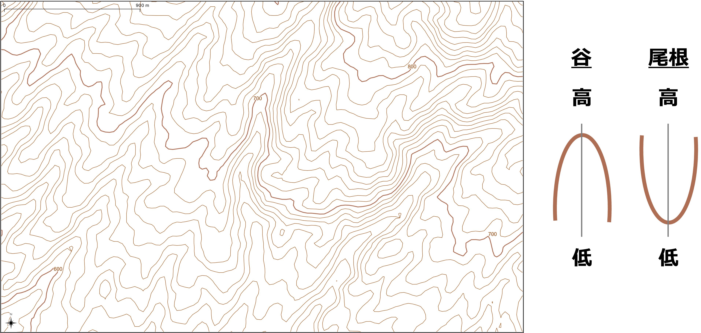
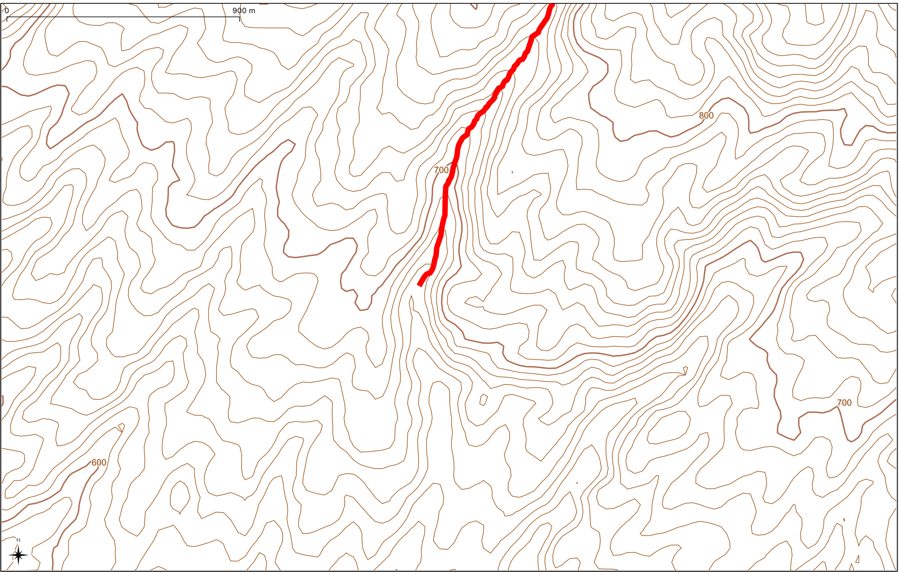
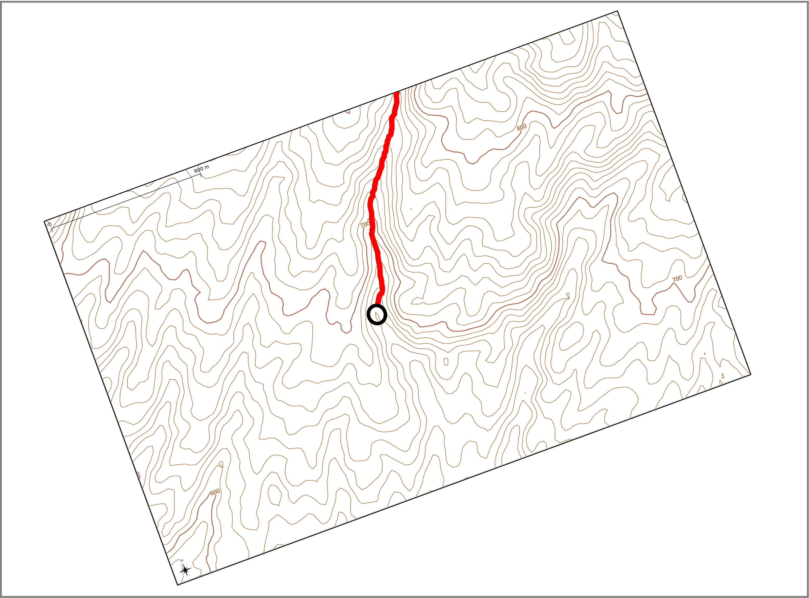
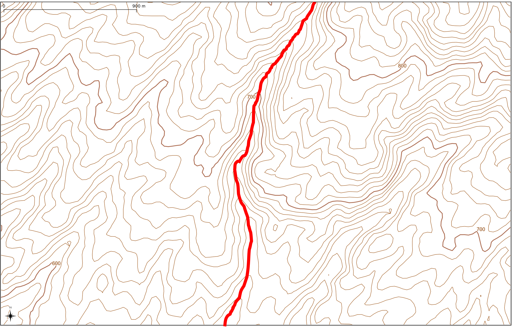
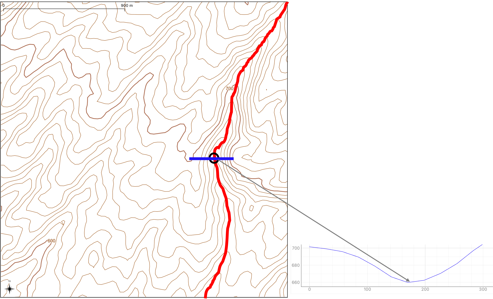
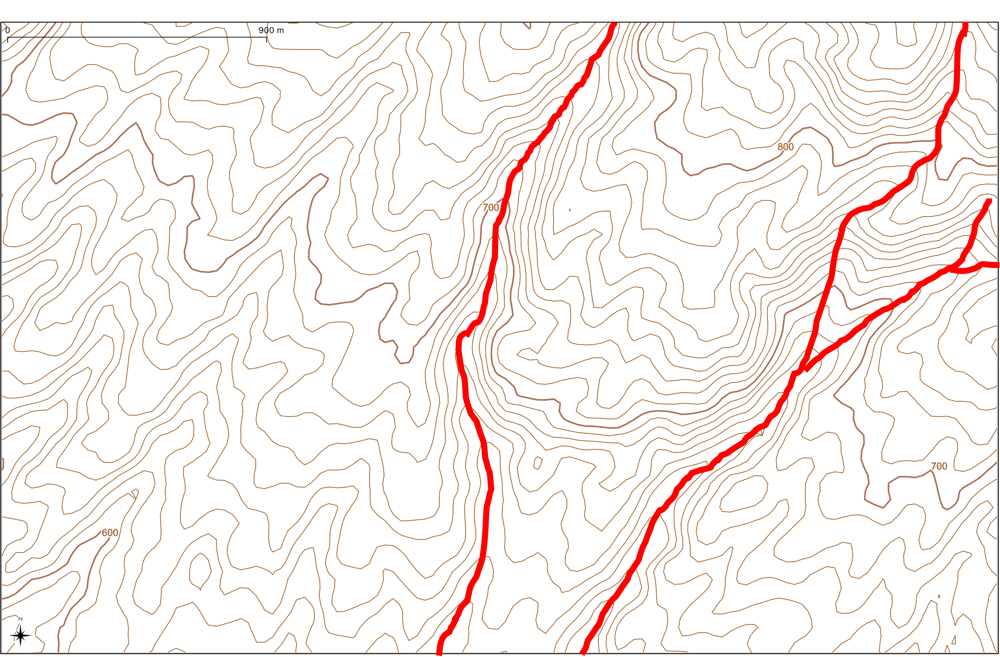

等高線を用いた谷の判読
この演習では、等高線から谷を判読し、谷線を作成する手法を解説します。以下は、地形図で高低差を判読できることを前提とした解説になります。
谷と尾根（谷線と尾根線）
谷線は谷底、尾根線は尾根の一番高いところを示す線です。これらは、等高線の形から判読できます。まずは、以下の図の700 mの等高線を見てみましょう。等高線は土地の高さを示す線ですが、同じ高さでもでこぼこしているのがわかります。よくみると、大きくへこんでいるところと大きくでっぱっているところがあります。これが尾根と谷で、この中央に記入する線が尾根線と谷線です。 
この「へこみ」と「でっぱり」をみて、谷と思う方ところを指をさしてみましょう。次に、その場所から山頂まで線を引いてください（低いところから高いところに向かって線をひきます）。この際、等高線のでこぼこが明瞭でなくなるまで線を引いてください。よくわからない人は、以下の図のように線を引いてみましょう。 
次に、始点とした場所に○をつけます。この○を自分が実際にいる位置と仮定します。○を基準に、先ほど作成した線を、低いところから高いところをみるように眺めてください。わからない人は、自分の目線で線の方向（低いところから、高いところ）がみれるように地図を回転してみましょう。そうすると、その○に対して、等高線が迫ってきているか、遠ざかっているか（凹んでいる）がわかります。わからない人は、700 mの等高線を基準にしてください。このとき、等高線が遠ざかっているので、この○の場所は谷ということになります。線が迫ってきていれば、そこは尾根です。 
谷は水がながれるところなので、最終的に川につながります。そのため、その○から下流にも谷線を伸ばして作成してください。これで、谷線の完成です。 
まだわからないという人は、以下を試してみましょう。作成した線に対して、横方向に交わる線（谷または尾根を横断する線）を作成し断面図を作成します。断面図は地形を切って横からみたものなので、線の形から一番高いところ（尾根）と低いところ（谷）が判読できます。○の位置は谷にあることがわかります。 
手順の要約（谷の判読）
- 同じ高さの等高線を俯瞰して、大きく凹んでいると思うところをみつける。
- その場所を始点として、低いところから、高いところに向かう線を作成する。
- 始点に○をつけ、地図を自分の視点に回転する。
- ○に対して、等高線が遠ざかっていれば（へこんでいれば）、谷と判読できる
- わからなければ、2の線に対して、谷と尾根を横方向に横断する線を作成し、断面図で判断する。
- 谷線であれば、高いところは等高線のでこぼこが明瞭でないところまで引き、低いところは川とつなげる（ただし、例外がある場合も。）
上流部では谷が分岐していることもあるので、しっかり等高線を観察する。山地に降った雨水が低いところに集まって流れていくイメージをもってください。以下の図は、途中まで谷線を記入したものです。この地図を参考にワークシートに谷線を追加してみましょう。 